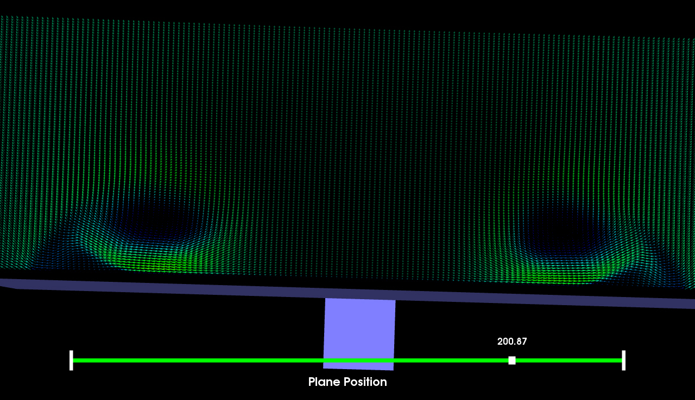
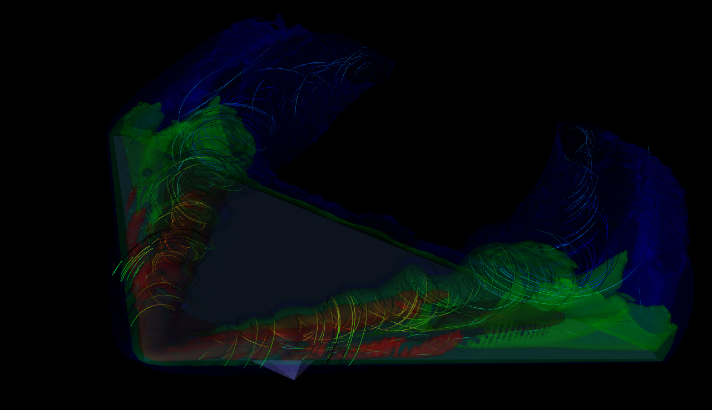

CS530 Introduction to Scientific Visualization Report for Project Five
_______________________________________________________________________________________________________________________________________
Vector Field / Flow Visualization
Part 1 - Visual Exploration of a Delta Wing Dataset
I just did part 1. The datasets I used are tdelta-wing.vtk, tdelta-low.vtk and tdelta-vortmag-low.vtk (My
laptop (Thinkpad R400) is an old one. High resolution datasets make my laptop extremely slow).
Task 1 Glyphs
In this task arrow glyphs are used to visualize the velocity of the flow around the delta wing. I used 3 planes at 3 different locations along the X axis (with normal pointing along the X direction) to capture the primary, secondary, tertiary vortices on each side of the wing. I used VectorReader->GetOutput()->GetPointData()->GetVectors()->GetRange(range) to get the vector value range of the dataset. The minimum value is -0.362368 and the maximum value is 152.99. So I design a color mapping {30 -> blue, 60 -> cyan, 90 -> green, 120 -> yellow, 150 -> red}. The cold colors represents low velocity and the warm colors represent high velocity. Also the size of the arrow glyph is scaled according to the magnitude of the vector.
I used a slider bar to move the position of the plane along X axis. After experiment I chose the first position to be (40,0,0). It shows the initial stage of the vortice cores of the primary vortices.
The second position I chose is (80,0,0). It shows the primary vortices and the initial stage of the secondary vortices.
The third position I chose is (140,0,0). It shows the primary vortices and the secondary vortices.
Below shows the visualization results at some other positions.


Task 2 Streamlines, Stream Tubes and Stream Surfaces
Streamlines
In task 1 the X position 40 shows the initial stage of the formation of the vortices. After experiment I chose a nearby X position 45, and Y positions 25 and -25, and Z position 0 as the coordinates of the left and right seeding points. I set the radius to 10, the number of points to 50 for both seeding points. I used VorticityOn function to enable the computation of vorticity, which replaces the velocity vectors by vorticity vectors. Also I used SpeedScalarsOn function to create scalar data from velocity magnitude for color mapping. The color mapping is the same as in task 1. Below shows the visualization results. The features of vorticity are well captured.
Stream Tubes
I used the same coordinates for the seeding points in stream tubes as in the streamline case. The number of the points at each seed is reduced to 20. Also I used SetVaryRadiusToVaryRadiusByScalar function to turn on the variation of tube radius with scalar value. Below shows the visualization results.

Stream Surfaces
For stream surfaces first I still used the same two seeding points for the rake.
I used SetIntegrationDirectionToForward and SetIntegrationDirectionToBackward
functions to generate two stream surfaces and spliced them together. Also I
chose an opacity of 0.6 for the stream surfaces to facilitate vorticity
observation. The result is shown below (not good).
Then I tried to increase the displacement of the seeding points on Y axis. I chose (45,-45,0) and (45,45,0). The result is shown below. It is better but still not good enough.
Then I tried also changing the Z positions of the seeding points. I chose (45,-45,5) and (45,45,5). The results are shown below. They are better than the former ones.
Task 3 Combination of Scalar and Vector Visualization
In this task both scalar and vector visualization are used in order to visualize
the relationship between the streamlines geometry and the shape of the
isosurfaces. First I used the code in project 3 to discover the interesting
isosurfaces in "tdelta-vortmag-low" dataset. The results are shown below.
Isovalue = 500
Isovalue = 1800
Isovalue = 9000

I think the above three isosurfaces are the most
representive ones. First I colored the isosurfaces in this manner {500->blue,
1800->green, 9000->red}. Higher magnitudes are represented by warmer color. The
opacities I chose for the isosurfaces are {500->0.15, 1800->0.2, 9000->0.25}.
The seeding of the streamlines remains the same as in task 2 streamlines visualization. The results are shown below.


However the visualization at the head of the delta wing is
not so good due to the clutter of too many graphical elements. After experiment
I decided to remove the 9000 isosurface, just keep the 500 and 1800 ones, and
change the color mapping to {500->blue, 1800->red}. Also I reduced the number of
points in streamline seeding to 40. The result seems to be a good one, in which
the streamlines are shown in the context of isosurfaces.
Task 4 Analysis
In task 1 the arrow glphys are used to show the flow vectors around the delta wing. Using scaling the magnitudes can also be captured. The plane samples a slice of data from the dataset which can help to find the critical regions and the proper seeding positions for streamlines/streamtubes/streamsurfaces. By moving the plane along X axis we can see the evolution of the vorticity flow. However it only provides local views of the dataset. Streamlines/Streamtubes/Streamsurfaces provide global views of the dataset. The initial positions of the seeding positions play an important role in the final visualization results. Streamlines and streamtubes are similar. However streamtubes can show the magnitude changes by varying the radius of the tubes, which is more intuitive. The visualization of streamsurfaces is a little tricky. We need to do both forward and backward integration and splice the two parts together to form a whole streamsurface. There are more parameters to set in the code. If we do it in the Resample mode, then a resolution needs to be set. If we do it in the PointWalk mode, we need to specify the distance factor. Also we need to assign proper opacity to the streamsurfaces to see the inside features. The combination of isosurfacing and vector visualization is very helpful. The most important thing is that isosurfacing provides a context for the vector visualization. We can see the connection between the velocity information and the scalar feature captured by isosurfacing.
{kind=link}
{kind=link}
{kind=link}
{kind=link}
{kind=link}
{kind=link}
{kind=link}
{kind=link}
{kind=link}
{kind=link}
{kind=link}
{kind=link}
{kind=link}
{kind=link}
{kind=link}
{kind=link}
{kind=link}
{kind=link}
{kind=link}
{kind=link}
{kind=link}
{kind=link}
{kind=link}
{kind=link}
{kind=link}
{kind=link}